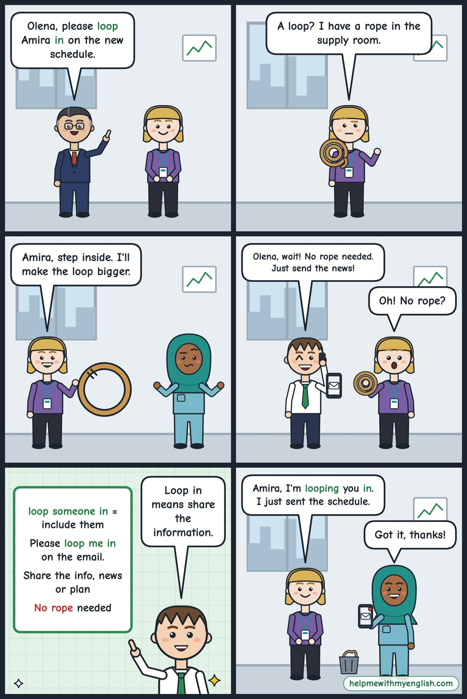

loop someone in
To include someone in a conversation or a plan so they get information.
Please loop me in on the email so I know what's happening.
Tip: Say 'loop someone in (on something)', and put the person between 'loop' and 'in': 'loop her in', not 'loop in her'; it's common in workplaces but also fine with friends and family.
Hear it in conversation
Workbook
1. What does it mean?
In this conversation, what does 'loop you in' mean?
2. Fill the gap
The project changed again, so could you before the client call tomorrow?
3. Choose the best reply
Amira: I only heard about the new deadline today. Why didn't anyone tell me?
4. Your turn: speak
Tell me about a time when you were not given important information about a plan or a change. What happened?
Show an example answer
Last year my team changed the schedule for a group project, but nobody told me. I turned up to the meeting a day late, and I felt really embarrassed. After that I asked my teammates to loop me in on every message, and it worked well.
Answer key: loop someone in
- 1. D. Tell you what is happening so you can be part of it
- 2. loop Sam in
- 3. B. Sorry, I thought Ken had looped you in on it.
- 4. Example: Last year my team changed the schedule for a group project, but nobody told me. I turned up to the meeting a day late, and I felt really embarrassed. After that I asked my teammates to loop me in on every message, and it worked well.
See it in a comic
